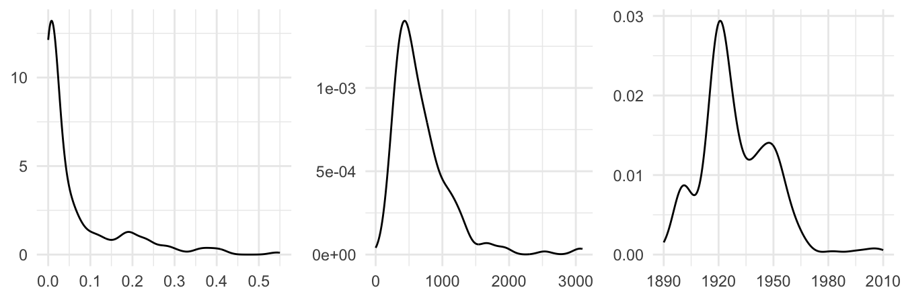
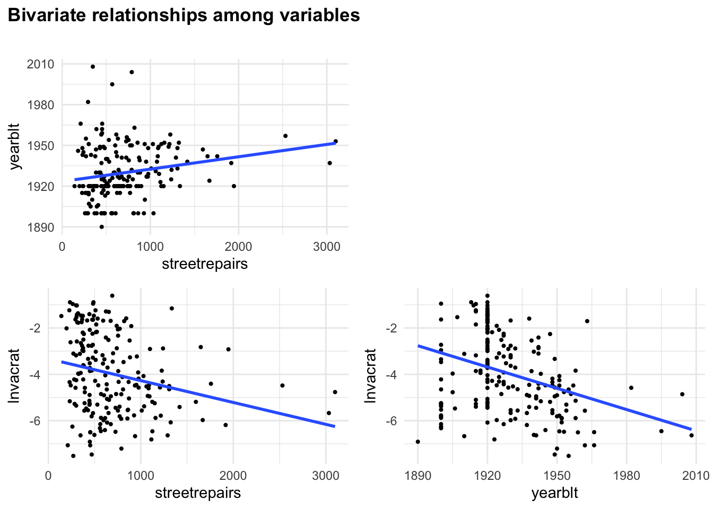
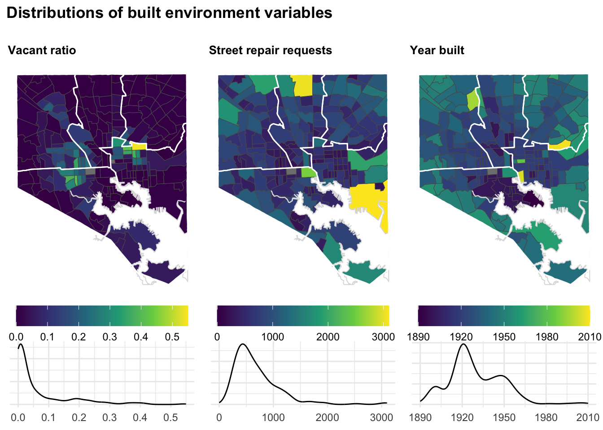
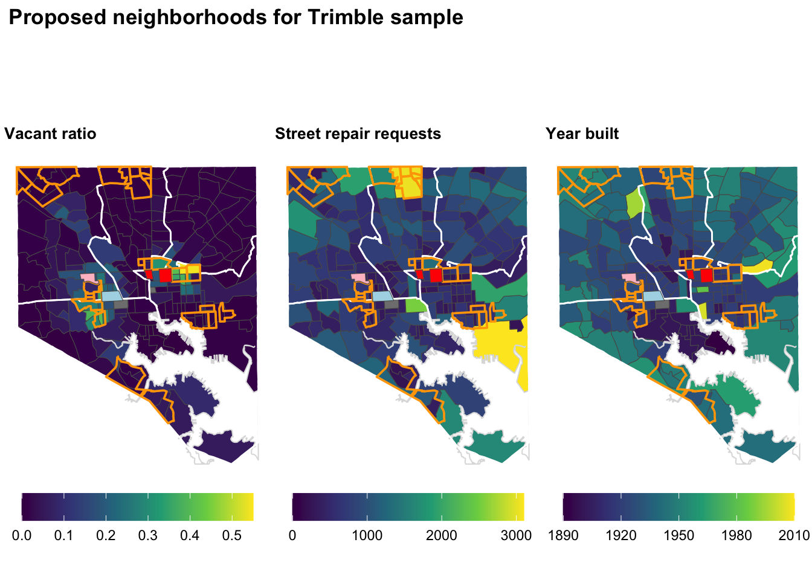
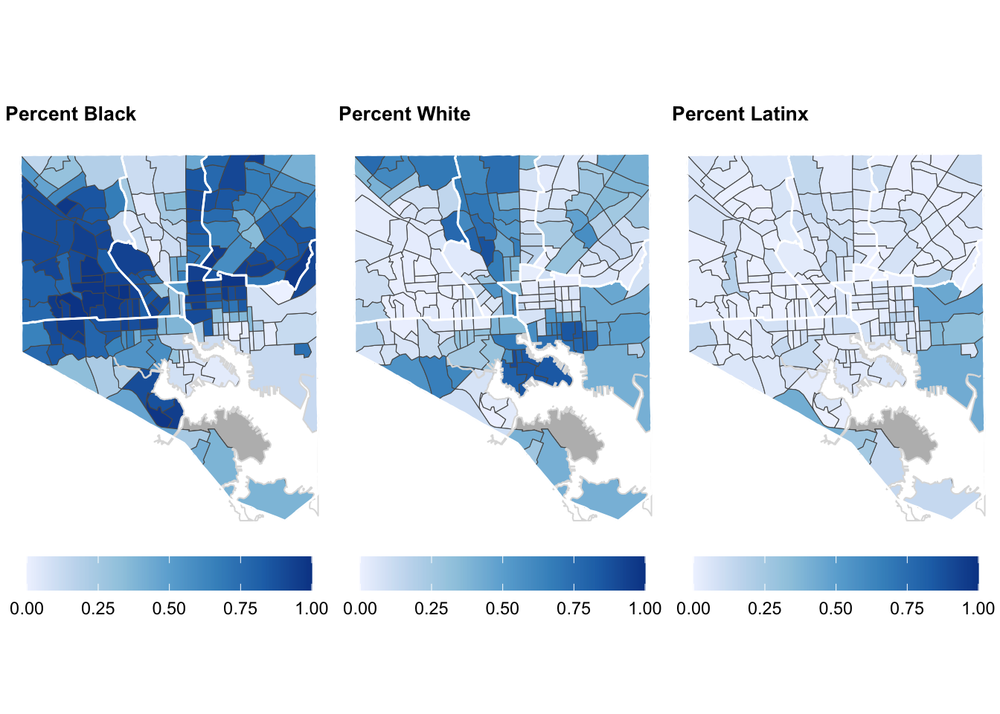
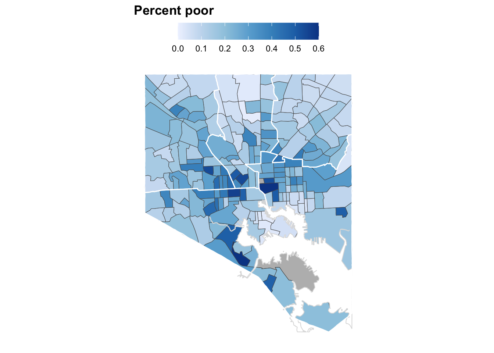

2 Neighborhood Sample
2.1 Data
Data come from two sources. The first are variables downloaded from various city sources for the number of vacant buildings, the number of 311 requests for street repairs, and the median (?) date of housing construction. These variables are saved in the CSV file data/potholes-vacants-yearbuilt.csv.
The last variable is the number of housing units. This variable comes from table B25001 in the American Community Survey. That data is obtained using the get_acs() function of the tidycensus library, which also downloads geography to be used for mapping values.
I merge the two tables and then create a variable that calculates the ratio of vacant buildings to housing units in the tract (this is a rough adjustment for number of buildings).
## Data from City Sources
dta <- read_csv("data/potholes-vacants-yearbuilt.csv", col_types = "cciii") %>%
mutate(
) %>%
rename(GEOID = tract)
## ACS Data (including geography)
hu <- get_acs(
geography = "tract",
variables = "B25001_001",
state = "MD",
county = "510",
geometry = TRUE
) %>%
sf::st_transform(crs = sf::st_crs("EPSG:6487")) %>%
rename(hu = estimate) %>%
select(GEOID, hu) %>%
left_join(dta, by = "GEOID") %>%
mutate(
lnvacant = log(vacant + 1),
vacrat = vacant / hu,
lnvacrat = if_else(hu > 0, log((vacant + 1) / hu), NA_real_)
)2.2 Univariate Distributions
Density the univariate distributions of the three variables we are examining for this analysis.
## Specify variables and labels
varnms <- c("vacrat", "streetrepairs", "yearblt")
varlab <- c("Vacant ratio", "Street repair requests", "Year built")
names(varlab) <- varnms
## Set unique limits and breaks for plots (also used in maps below)
varlims <- list(
vacrat = c(0, 0.55),
streetrepairs = c(0, 3100),
yearblt = c(1890, 2010)
)
varbrks <- list(
vacrat = seq(0, 0.55, 0.1),
streetrepairs = seq(0, 3000, 1000),
yearblt = seq(1890, 2010, 30)
)
varlabs <- list(
vacrat = sprintf("%.1f", varbrks[[1]]),
streetrepairs = as.character(varbrks[[2]]),
yearblt = as.character(varbrks[[3]])
)
## Function to create univariate density plot
densplot <- function(v) {
ggplot(hu, aes(x = .data[[v]])) +
geom_density() +
scale_x_continuous(
limits = varlims[[v]], breaks = varbrks[[v]]
) +
labs(x = NULL, y = NULL)
}
## Plot density plots into row
d_plts <- map(varnms, densplot)
d_pltrow <- ggarrange(d_plts[[1]], d_plts[[2]], d_plts[[3]], nrow = 1)## Warning: Removed 2 rows containing non-finite outside the scale range
## (`stat_density()`).## Warning: Removed 1 row containing non-finite outside the scale range (`stat_density()`).
## Removed 1 row containing non-finite outside the scale range (`stat_density()`).
2.3 Bivariate/Trivariate Relationships
Calculate the correlations between the variables.
hu %>%
as_tibble() %>%
select(lnvacrat, streetrepairs, yearblt) %>%
as.matrix() %>%
cor(use = "pairwise") %>%
round(2) ## lnvacrat streetrepairs yearblt
## lnvacrat 1.00 -0.24 -0.34
## streetrepairs -0.24 1.00 0.21
## yearblt -0.34 0.21 1.00Plot bivariate scatterplots of the three variables and a correlation matrix.
sct1 <- ggplot(hu, aes(x = streetrepairs, y = yearblt)) +
geom_point(size = 0.75) + geom_smooth(method = "lm", se = FALSE)
sct2 <- ggplot(hu, aes(x = streetrepairs, y = lnvacrat)) +
geom_point(size = 0.75) + geom_smooth(method = "lm", se = FALSE)
sct3 <- ggplot(hu, aes(x = yearblt, y = lnvacrat)) +
geom_point(size = 0.75) + geom_smooth(method = "lm", se = FALSE)
ttl <- ggplot() + labs(title = "Bivariate relationships among variables") +
theme(title = element_text(face = "bold"))
cor_plt <- ggarrange(
ggarrange(ttl),
ggarrange(sct1, NULL, sct2, sct3),
nrow = 2, heights = c(.1, .9)
)
cor_plt
2.4 Map Distributions
Below, we plot values of the three variables onto maps of Baltimore. The white boundaries represent the Census public-use microdata areas (PUMAs). The figure below is saved to out/img/variable-maps-densities.pdf.
## Download PUMA geography
pumas <- pumas(state = "24", year = 2022) %>%
filter(PUMACE20 %in% paste0("0080", 1:5))
## Download and crop Chesapeake Bay geography
f_chpk <- "data/Chesapeake_Bay_92_Segments/Chesapeake_Bay_92_Segments.shp"
dta_chpk <- st_read(f_chpk) %>%
sf::st_transform(crs = sf::st_crs("EPSG:6487")) %>%
st_crop(st_bbox(hu))## Warning: attribute variables are assumed to be spatially constant throughout
## all geometriesbmplot <- function(v) {
ggplot() +
geom_sf(data = hu, aes(fill = .data[[v]])) +
geom_sf(data = dta_chpk, fill = "white", color = "#dddddd", linewidth = .35) +
geom_sf(data = pumas, alpha = 0, color = "white", linewidth = .5) +
scale_fill_viridis_c(
limits = varlims[[v]], breaks = varbrks[[v]],
labels = varlabs[[v]]
)+
labs(
title = varlab[v],
fill = NULL
) +
theme_map
}
bm_plts <- map(varnms, bmplot)
ttl <- ggplot() + labs(title = "Distributions of built environment variables") +
theme(title = element_text(face = "bold"))
d_plts_c <- map(d_plts, function(p) {
p + theme(
axis.text.y = element_blank()
)
})
ggarrange(
ttl,
ggarrange(bm_plts[[1]], bm_plts[[2]], bm_plts[[3]], nrow = 1),
ggarrange(d_plts_c[[1]], d_plts_c[[2]], d_plts_c[[3]], nrow = 1),
nrow = 3, heights = c(.075, .45, .15)
)## Warning: Removed 2 rows containing non-finite outside the scale range
## (`stat_density()`).## Warning: Removed 1 row containing non-finite outside the scale range (`stat_density()`).
## Removed 1 row containing non-finite outside the scale range (`stat_density()`).
2.5 Proposed Sample Neighborhoods
Based on variation across the three different variables above (and our knowledge of the racial/ethnic and socioeconomic distributions), we may consider sampling the following neighborhoods. The neighborhood names come from spatial data maintained by Baltimore City official list.
proposed_nhds <- list(
# Central Baltimore
central = c(
"Old Goucher", "Barclay", "East Baltimore Midway", "Broadway East",
"Berea"
),
# Northwest
northwest = c(
"Fallstaff", "Cross Country", "Glen", "Cheswolde"
),
# North Central
north_central = c(
"North Roland Park/Poplar Hill", "The Orchards", "Bellona-Gittings",
"Cedarcroft", "Rosebank", "Lake Evesham", "Homeland"
),
# West
west = c(
"Carrollton Ridge", "Boyd-Booth", "Penrose/Fayette Street Outreach",
"Evergreen Lawn", "Bridgeview/Greenlawn", "Rosemont Homeowners/Tenants",
"Midtown-Edmondson"
),
# South
south = c(
"Cherry Hill", "Brooklyn"
),
# East
east = c(
"Highlandtown", "Greektown", "Canton", "Brewers Hill"
)
)The proposed neighborhoods are plotted in orange below. This covers variation across our three variables and some racial and socioeconomic variation. It does, however, miss much of East Baltimore (especially the Northeast). Mac and I ran an experiment a while back and covered the streets along the route at this link in one hour and fifteen minutes. Based on that, it’s possible that we can do the cluster of neighborhoods in the Northwest and in the Roland Park/Homeland area in one day, the Midtown and Old Goucher/Broadway East stretch another day, South Baltimore a third day, and have another day to do more on the East Side.
f_nhd <- "data/Neighborhood/Neighborhood.shp"
dta_nhd <- st_read(f_nhd, quiet = TRUE)
dta_bal <- dta_nhd %>%
st_buffer(5) %>%
st_union() %>%
st_buffer(-5)
dta_pnhd <- dta_nhd %>%
filter(Name %in% unlist(proposed_nhds))
nrow(dta_pnhd) == length(proposed_nhds) # Check that all proposed neighborhoods
# are in data
# Add proposed neighborhood to map plots
p_pnhd <- geom_sf(data = dta_pnhd, alpha = 0, color = "orange", linewidth = 0.65)
p_build <- geom_sf(data = filter(dta_nhd, Name %in% c("Greenmount West", "Oliver")), fill = "red")
p_parity <- geom_sf(data = filter(dta_nhd, Name %in% c("Harlem Park")), fill = "lightblue")
p_coppin <- geom_sf(data = filter(dta_nhd, str_detect(Name, "Coppin")), fill = "pink")
bm_pnhds <- map(bm_plts, function(p) {return(p + p_pnhd + p_build + p_parity + p_coppin)})
ttl <- ggplot() + labs(title = "Proposed neighborhoods for Trimble sample") +
theme(title = element_text(face = "bold"))
ggarrange(
ttl,
ggarrange(bm_pnhds[[1]], bm_pnhds[[2]], bm_pnhds[[3]], nrow = 1),
nrow = 2, heights = c(.039, .236)
)
Create a dataframe containing sampled areas that dissolves neighborhood boundaries.
pnhdlabs <- unlist(proposed_nhds)
names(pnhdlabs) <- str_replace(names(pnhdlabs), "\\d+$", "")
dta_smpreg <- dta_pnhd %>%
mutate(
region = fct_recode(Name, !!!pnhdlabs)
) %>%
st_buffer(100) %>% ## Avoid slivers by buffering by 500ft.
group_by(region) %>%
summarize(
) %>%
st_zm() 2.5.1 Reference Maps
The following maps provide a reference for the race/ethnicity and poverty composition of city neighborhoods.
2.5.2 Race/Ethnicity
dta_re <- get_acs(
geography = "tract",
table = "B03002",
output = "wide",
state = "MD",
county = "510",
geometry = TRUE,
cache_table = TRUE
) %>%
rename_with(~str_replace(., "E$", ""))%>%
mutate(
totpop = B03002_001,
pnhw = B03002_003 / totpop,
pnhb = B03002_004 / totpop,
poth = (B03002_002 - (B03002_003 + B03002_004)) / totpop,
phsp = B03002_012 / totpop
) %>%
sf::st_transform(crs = sf::st_crs("EPSG:6487"))
plot_re <- function(v, l) {
ggplot() +
geom_sf(data = dta_re, fill = "#bbbbbb") +
geom_sf(data = filter(dta_re, totpop > 200), aes(fill = .data[[v]])) +
geom_sf(data = dta_chpk, fill = "white", color = "#dddddd", linewidth = .35) +
geom_sf(data = pumas, alpha = 0, color = "white", linewidth = .5) +
scale_fill_distiller(
palette = "Blues", direction = 1, limits = c(0, 1)
) +
labs(
title = paste("Percent", l)
) +
theme_map
}
vars_re <- c(Black = "pnhb", White = "pnhw", Latinx = "phsp")
plts_re <- map2(vars_re, names(vars_re), plot_re)
ggarrange(
plts_re[[1]], plts_re[[2]], plts_re[[3]],
nrow = 1
)
2.5.3 Poverty
dta_pov <- get_acs(
geography = "tract",
variables = c("B17001_001", "B17001_002"),
output = "wide",
state = "MD",
county = "510",
geometry = TRUE,
cache_table = TRUE
) %>%
mutate(
totpop = B17001_001E,
ppov = B17001_002E / totpop,
ppovc = cut(ppov, seq(0, .4, .05))
)
ggplot() +
geom_sf(data = dta_pov, fill = "#bbbbbb") +
geom_sf(data = filter(dta_pov, totpop > 200), aes(fill = ppov)) +
geom_sf(data = dta_chpk, fill = "white", color = "#dddddd", linewidth = .35) +
geom_sf(data = pumas, alpha = 0, color = "white", linewidth = .5) +
scale_fill_distiller(
palette = "Blues", direction = 1, limits = c(0, .6),
breaks = seq(0, 0.6, .1)
) +
labs(
title = "Percent poor",
fill = NULL
) +
theme_minimal() +
theme(
title = element_text(face = "bold"),
legend.position = "top",
panel.grid = element_blank(),
axis.text = element_blank(),
legend.key.width = unit(2, "lines"),
legend.margin = margin(b = -3, unit = "pt")
)